.png)
HỆ SINH THÁI NÔNG NGHIỆP THÔNG MINH EAAGRI
Giải pháp tối ưu hóa chuỗi giá trị sầu riêng tại Tây Nguyên: Tích hợp AI đa phương thức, IoT và Đặt lịch chuyên gia và mô hình kinh tế chia sẻ.
Giải pháp tối ưu hóa chuỗi giá trị sầu riêng tại Tây Nguyên: Tích hợp AI đa phương thức, IoT và Đặt lịch chuyên gia và mô hình kinh tế chia sẻ.


 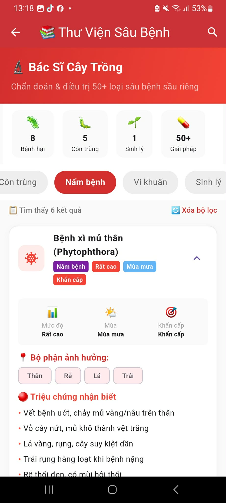
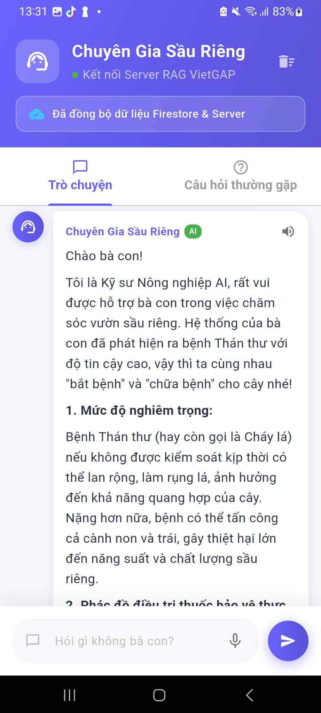
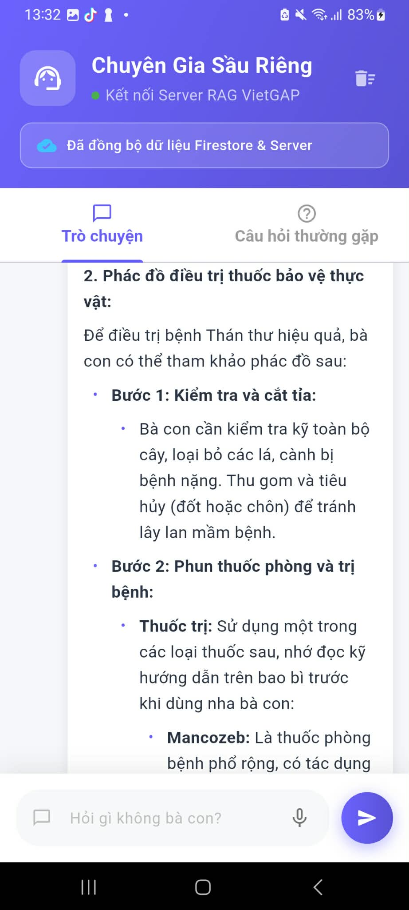
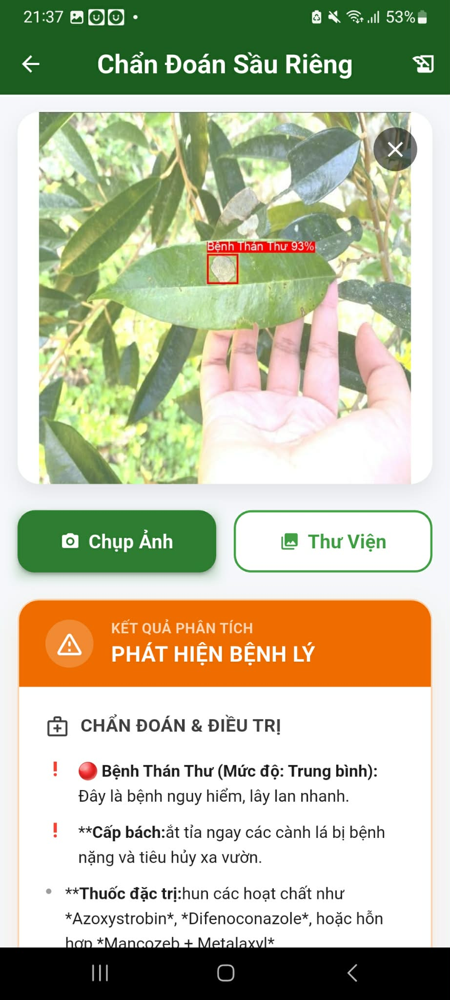
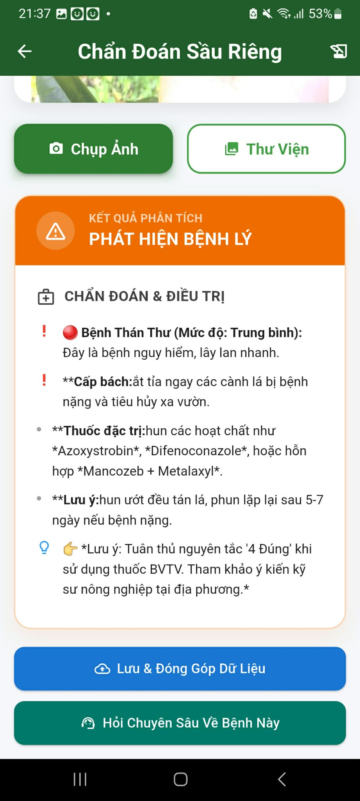
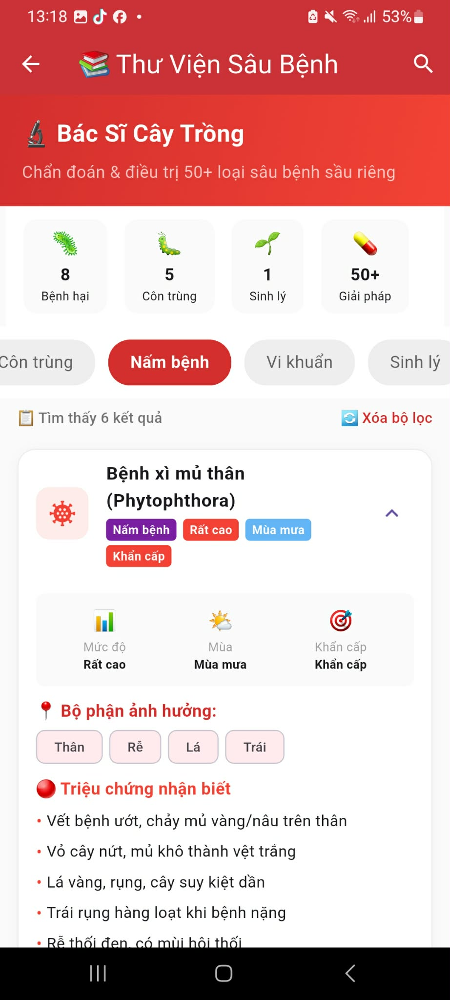
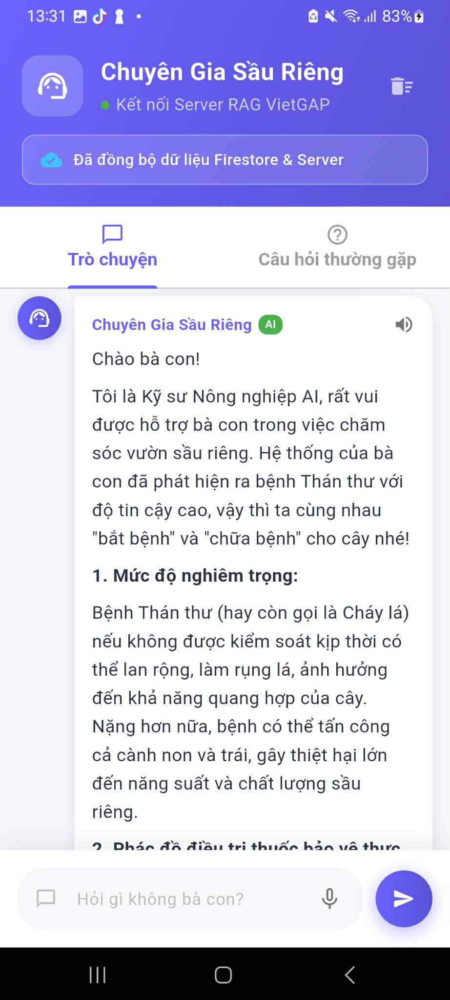
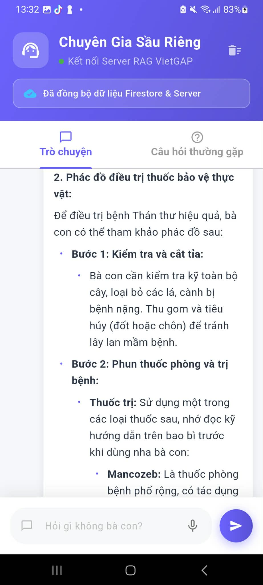
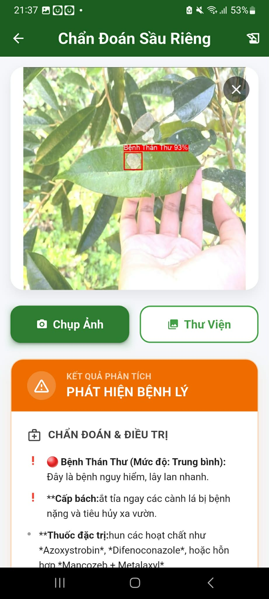
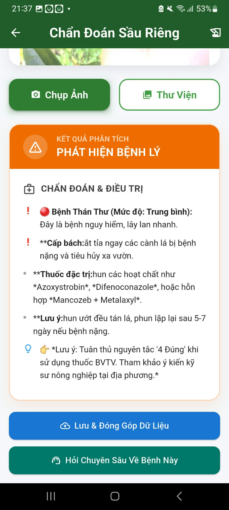
 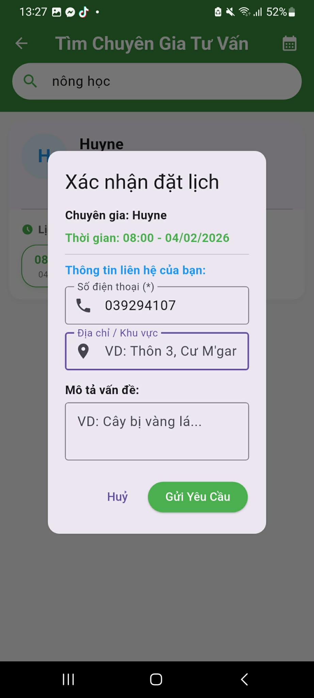
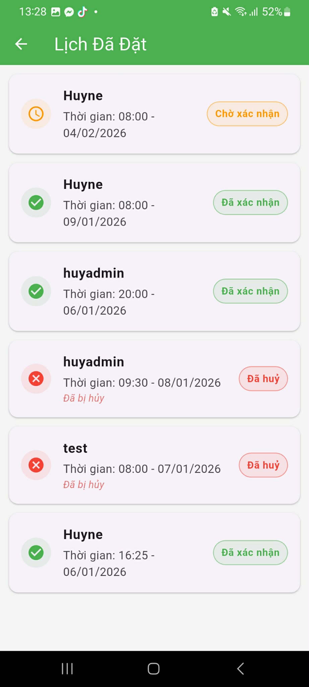
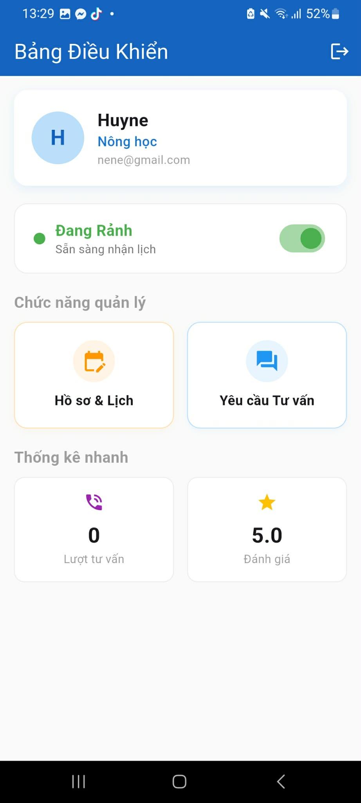
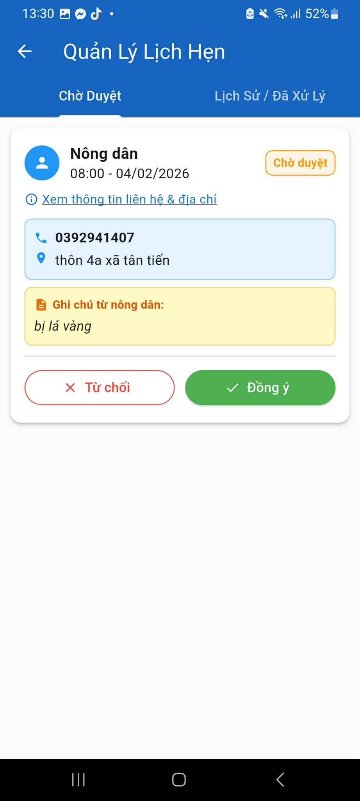
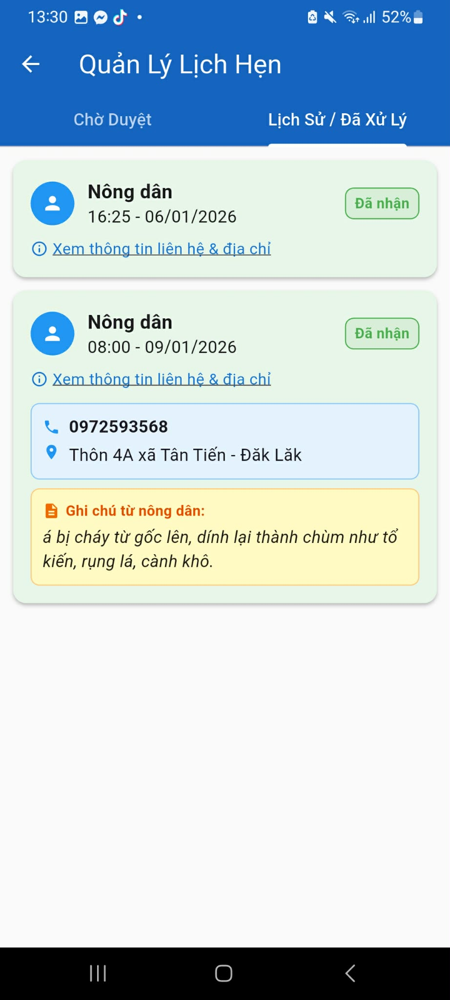
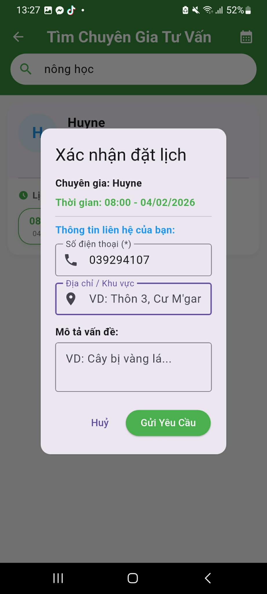
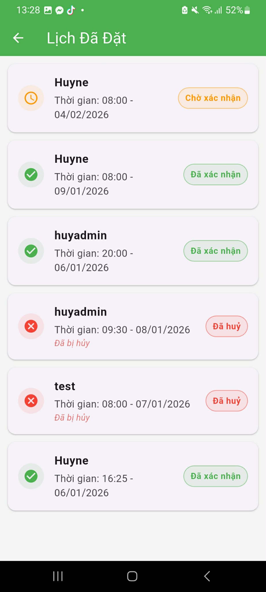
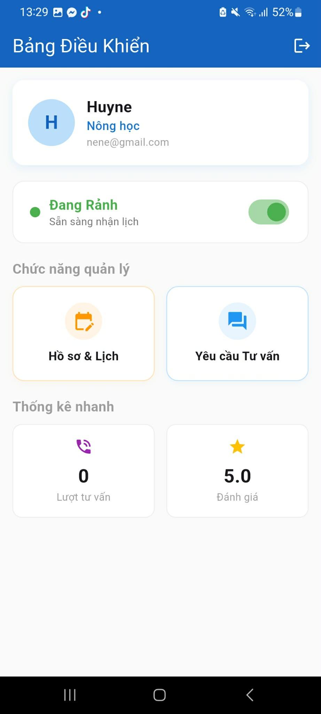
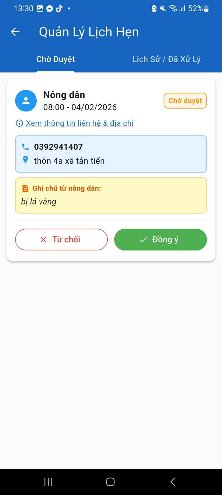
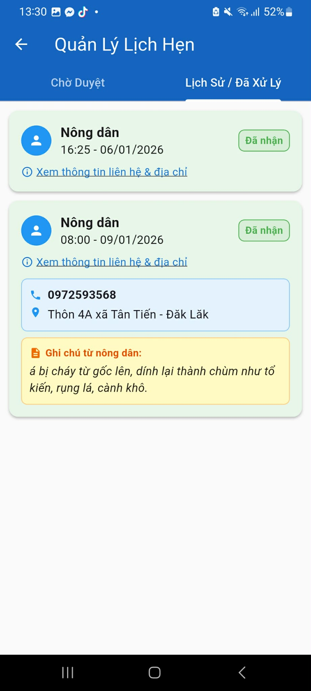
Dự án được thực hiện bởi sinh viên Khoa Công nghệ Thông tin - Trường Đại học Nguyễn Tất Thành.
Phan Đăng Huy (MSSV: 2311559215) - Khoa học dữ liệu
Nguyễn Anh Giảng (MSSV: 2311558913) - Khoa học dữ liệu
Nông nghiệp Tây Nguyên đang đối mặt với "Tứ giác rủi ro": Sốc nước do biến đổi khí hậu, dịch bệnh phức tạp, thiếu hụt tri thức chuyên môn và bất đối xứng thông tin thị trường.
EaAgri ra đời nhằm số hóa quy trình canh tác, chuyển dịch sang "Data-driven farming", giúp giảm thiểu lãng phí tài nguyên và kết nối nông dân với chuyên gia kỹ thuật thông qua công nghệ AI & IoT tiên tiến.
Mô hình Hybrid kết hợp giữa sức mạnh tính toán của AI, khả năng giám sát của IoT và yếu tố chuyên gia con người (Human-in-the-loop).
Xem trực tiếp trên YouTube (Nếu video bị lỗi hiển thị)
Video 1. Demo thực tế sản phẩm EaAgri
Hệ thống sử dụng mạng lưới cảm biến độ ẩm đất đa tầng để ra quyết định tưới thông minh dựa trên logic 3 lớp:
Kết hợp sức mạnh giữa thị giác máy tính và khả năng suy luận ngôn ngữ:
Hệ thống chuẩn hóa và chuyển đổi dữ liệu đầu vào thành vector để truy xuất ngữ cảnh chính xác từ cơ sở dữ liệu, từ đó giúp LLM phản hồi thông minh về giá cả và kỹ thuật canh tác cây trồng.
Giải quyết vấn đề bất đối xứng thông tin thị trường cho nông dân:
Các nền tảng kỹ thuật hỗ trợ dự án vận hành ổn định.
Đa nền tảng Android/iOS, đảm bảo trải nghiệm mượt mà cho nông dân.
Sử dụng Firestore, Authentication, Cloud Functions cho dữ liệu thời gian thực.
Tích hợp YOLOv9 (PyTorch/TFLite) và Google Gemini API.
Vi điều khiển chi phí thấp, hỗ trợ WiFi/Bluetooth kết nối cảm biến.
Kết nối với các nguồn dữ liệu bên ngoài như API giá sầu riêng và cơ sở dữ liệu kiến thức cây trồng để làm giàu ngữ cảnh cho hệ thống.
Dự án đã triển khai thí điểm tại xã Tân Tiến, Đắk Lắk. Hệ thống hoạt động ổn định 24/7, độ trễ dưới 2s, dự báo giá sai số < 5% và thực hiện chính xác kịch bản "Ngưng tưới đón đầu".

Mở rộng quy mô Hợp Tác Xã & Thương mại hóa.
Giai đoạn tiếp theo: Tích hợp thanh toán, phát triển phần cứng EaAgri Box và mở rộng sang Hồ tiêu, Cà phê.